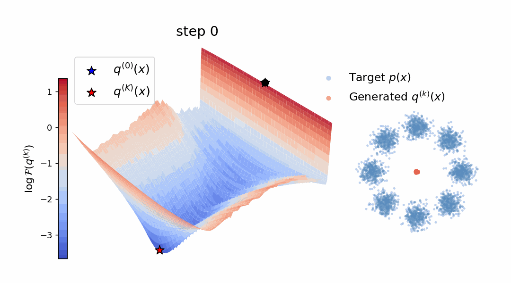
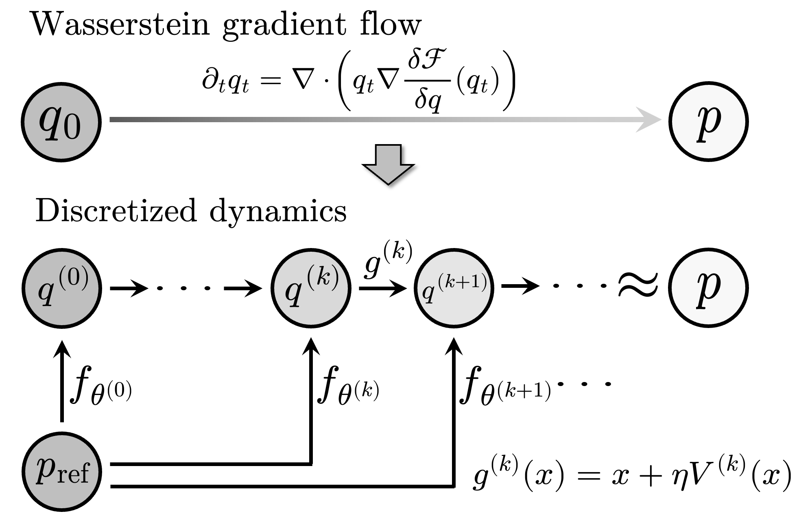
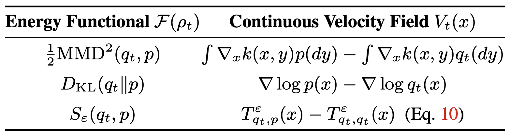
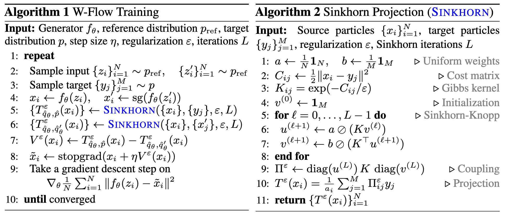
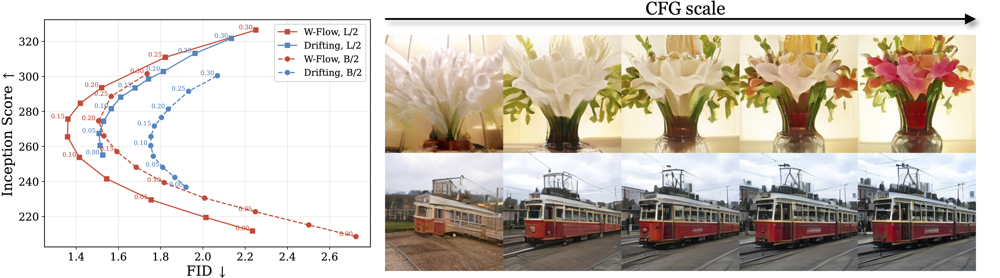
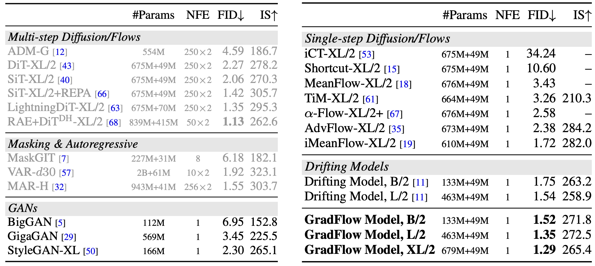
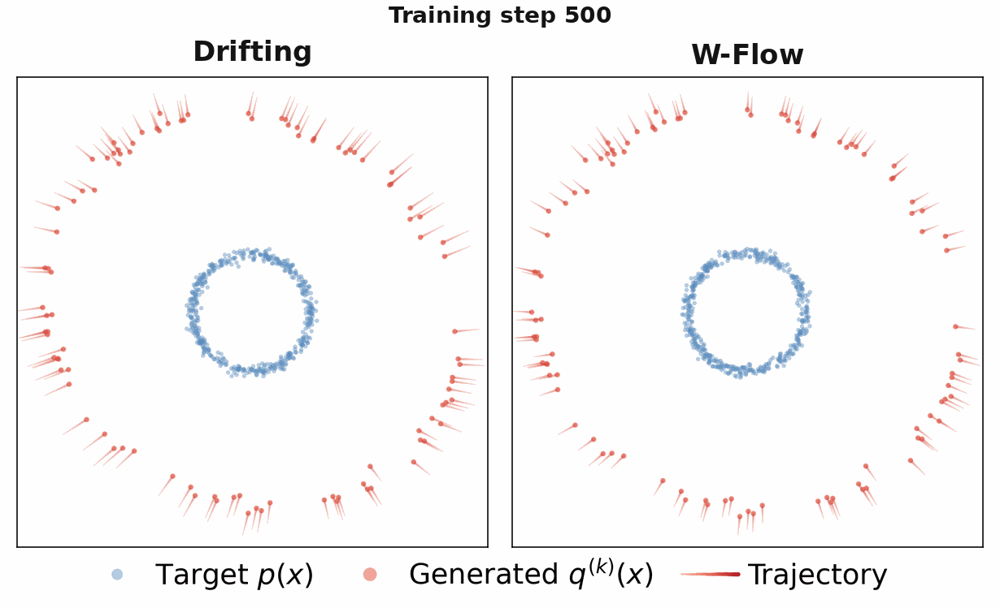

Abstract
Diffusion models and flow-based methods have shown impressive generative capability, especially for images, but their sampling is expensive because it requires many iterative updates. We introduce W-Flow, a framework for training a generator that transforms samples from a simple reference distribution into samples from a target data distribution in a single step.
This is achieved in two steps: we first define an evolution from the reference distribution to the target distribution through a Wasserstein gradient flow that minimizes an energy functional; second, we train a static neural generator to compress this evolution into one-step generation. We instantiate the energy with the Sinkhorn divergence, which yields an efficient optimal-transport-based update rule that captures global distributional discrepancy and improves coverage of the target distribution. We further prove that the finite- sample training dynamics converge to the continuous-time distributional dynamics under suitable assumptions.
Empirically, W-Flow sets a new state of the art for one-step ImageNet 256×256 generation, achieving 1.29 FID, with improved mode coverage and domain transfer. Compared to multi-step diffusion models with similar FID scores, our method yields approximately 100× faster sampling. These results show that Wasserstein gradient flows provide a principled and effective foundation for fast and high-fidelity generative modeling.
Method
Wasserstein gradient flow (WGF). Given an energy functional $\mathcal{F}:\mathcal{P}(\mathbb{R}^n)\mapsto\mathbb{R}^n$ defined on probability distributions and the model generated distribution $q_t$, the WGF is given by $$\partial_t q_t = \nabla\cdot\!\left( q_t \nabla \frac{\delta \mathcal{F}}{\delta q}(q_t) \right). $$ The distribution $q_t$ evolves along the steepest descent direction of $\mathcal{F}$ in Wasserstein space. By choosing $\mathcal{F}$ to be a suitable divergence between $q_t$ and the target distribution $p$, the WGF can be used to define a continuous-time evolution that transforms samples from a simple reference distribution (e.g., Gaussian) to samples from the target distribution.

Our approach. Concretely, our method is realized by two steps. First, we prescribe how the entire model distribution should evolve toward the target distribution by a WGF. Then, we train a static generator to compress the discretized evolution into one-step generation. See the flowchart on the right. In particular, the discretization is give by: $$ g^{(k)}(x)= x + \eta V^{(k)}(x), \qquad V^{(k)}(x) = - \nabla \frac{\delta \mathcal{F}}{\delta q}(q^{(k)})(x), $$ where $V^{(k)}$ is the velocity field at step $k$ induced by the corresponding energy functional $\mathcal{F}$, and $\eta$ is the step size.

Choice of the energy funcitonal $\mathcal{F}$. The choice of $\mathcal F$ is critical, as it determines both the geometry of the WGF and the tractability of the induced velocity field. Common choices include e.g. squared MMD and KL divergence. Yet, they face significant limitations in practice and induce inferior performance. We resort to the Sinkhorn divergence, an OT-based discrepancy that avoids explicit score estimation and admits a natural and direct implementation on data samples.

Training. Empirically, we compute the barycentric projections $T^\varepsilon_{q_\theta,p}$ and $T^\varepsilon_{q_\theta,q_\theta}$ using Sinkhorn iterations (see Algorithm 2). Then, we train the one-step generator $f_\theta$ using a regression-based objective that enforces its outputs to match their particle-based updates via the velocity field (see Algorithm 1). Notaby, we adopt a two-batch estimator for the self-transport term $T^\varepsilon_{q_\theta,q_\theta}$.

Classifier-free guidance. Our framework naturally supports baking classifier-free guidance (CFG) into the generator at training time. The idea is to use a small batch of unconditional samples as additional reference to enforce an extra repulsion. Specifically, we define $$ \tilde{V}^{\varepsilon,w}_{q_\theta,p}(x_i)= \left(T^\varepsilon_{q_\theta(\cdot|c),p(\cdot|c)}(x_i) \!-\! T^\varepsilon_{q_\theta(\cdot|c),q_\theta(\cdot|c)}(x_i)\right) \!+\! w \underline{\left(T^\varepsilon_{q_\theta(\cdot|c),p(\cdot|c)}(x_i) \!-\! T^\varepsilon_{q_\theta(\cdot|c),p(\cdot|\varnothing)}(x_i)\right)},$$ where $T^\varepsilon_{q_\theta(\cdot|c),p(\cdot|\varnothing)}$ denotes the Sinkhorn barycentric projection (Alg. 2) between $q_\theta(\cdot|c)$ and the unconditional data distribution $p(\cdot|\varnothing)$. This construction injects guidance via the underlined term that computes the difference between the conditional and unconditional velocity fields. Notably, this differs from the CFG in Drifting Models, which directly modifies the repulsive distribution by incorporating additional particles from $p_\theta(\cdot|\varnothing)$. The empirical benefits of our CFG is illustrated below.

(Left) The FID and Inception Score curve when sweeping over different CFG scales.
(Right) Image samples produced by W-Flow, L/2 with CFG increasing from 0.0 to 2.0.
Main Results: Class-conditional Generation on ImageNet

We compare W-Flow with state-of-the-art one-step generators and multi-step diffusion and flow models. Notably, W-Flow establishes a new state of the art for one-step class-conditional generation on ImageNet 256$\times$256, achieving an FID of 1.29 at XL scale and 1.35 at L scale, outperforming MeanFlow-based methods and Drifting Models by a clear margin. Remarkably, W-Flow B/2, with only 133M generator parameters, achieves an FID of 1.52, surpassing Drifting Model L/2 despite its substantially larger 463M-parameter generator. Furthermore, despite 1-NFE sampling, W-Flow outperforms most diffusion models requiring up to 250 steps, such as LightningDiT-XL/2. These strong empirical results support our central claim that principled WGF dynamics can translate into exceptional generation performance.
Domain Transfer and Mode Coverage
Domain transfer. Unlike standard generative models that typically map Gaussian noise to data, W-Flow can instead define a WGF between arbitrary distributions. This makes it naturally suited for domain transfer tasks where the source and target share the same semantic space. By setting the reference distribution to be a source data distribution, it learns a one-step domain-transfer map, e.g., from senior to young-adult faces. In a 2D oval-to-circle toy example below, Drifting Model shows erratic intermediate states and often moves particles far from their initial positions. In contrast, the OT-induced velocity in W-Flow produces coordinated, nearly straight, and much shorter trajectories toward the target. We further evaluate one-step age translation on FFHQ, mapping senior faces (ages 55-100) to young-adult faces (ages 18-30). The figures below show that W-Flow induces more globally coordinated transports, achieves shorter latent $\ell_2$ transport distances, and better preserves source identity.

Oval-to-circle domain transfer. Source and target are constructed by sampling angles uniformly from $[0, 2\pi)$ with parametric curves corrupted by Gaussian noise.

One-step facial age translation on FFHQ, mapping older faces to younger ones. (Left) Histogram of the latent $\ell_2$ distance between 2,000 source images and their generated targets. (Right) Visual comparison.
Mode coverage. We construct a 2D Gaussian mixtures dataset with six large tightly concentrated modes and two small distant minority modes. As shown in the figure below, Drifting Model greedily collapses on the dominant clusters, while the Sinkhorn barycentric projections in W-Flow instead enforce global marginal constraints and successfully preserve the coverage of all modes. We further extend this observation to image generation on FFHQ under an imbalanced training distribution, where target batches contain 95% senior faces (ages 55-100) and 5% child faces (ages 0-12). The PCA visualization in the figure below shows that Drifting Model almost entirely drops the minority child mode, whereas W-Flow successfully captures it while maintaining high fidelity on the dominant senior mode.

Evaluation of mode coverage under imbalanced target distributions. (a) Evaluation of mode coverage on a 2D Gaussian mixtures dataset featuring six dominant modes and two distant minority modes. (b) PCA scatter plot of generated latent codes for an artificially imbalanced FFHQ target distribution (95% senior faces, 5% child faces).
Qualitative Samples

Uncurated image samples produced by W-Flow B/2 with CFG scale $w=0.15$.

Uncurated image samples produced by W-Flow L/2 with CFG scale $w=0.15$.

Uncurated image samples produced by W-Flow XL/2 with CFG scale $w=0.15$.

Uncurated image samples produced by W-Flow XL/2 with CFG scale $w=2.0$.
BibTeX
@article{han2026onestep,
title={One-Step Generative Modeling via Wasserstein Gradient Flows},
author={Han, Jiaqi and Li, Puheng and Guo, Qiushan and Xu, Renyuan and Ermon, Stefano and Candes, Emmanuel},
journal={arXiv preprint arXiv:2605.11755},
year={2026}
}